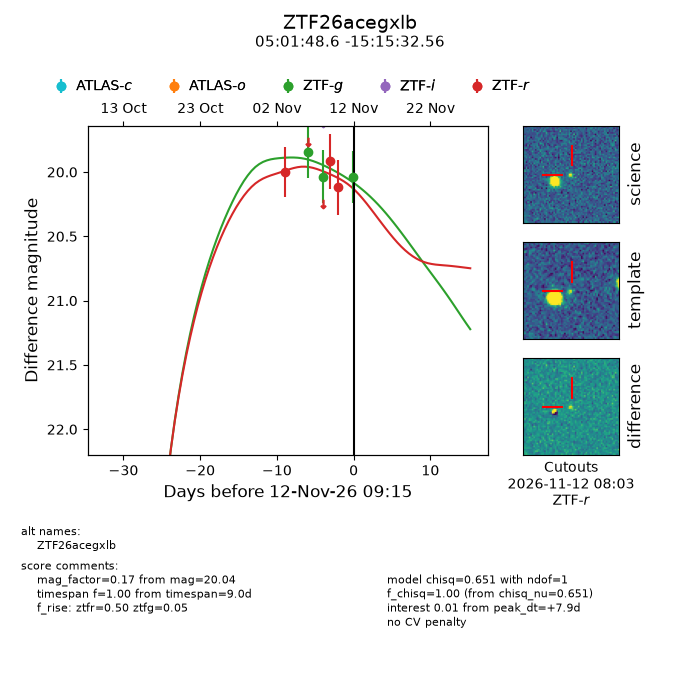
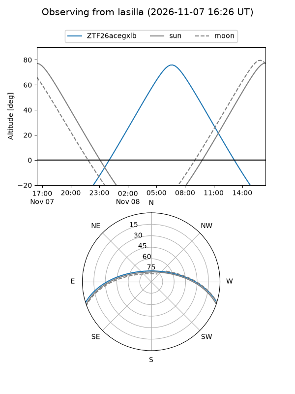
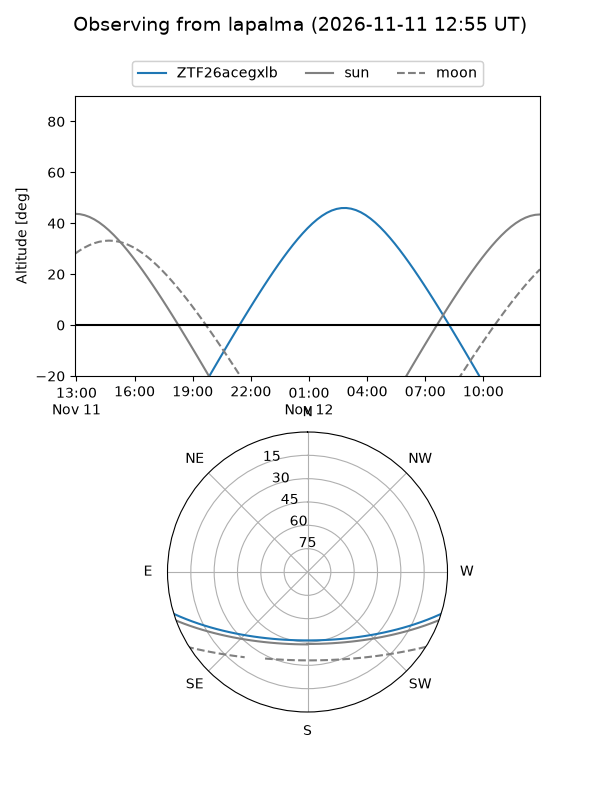
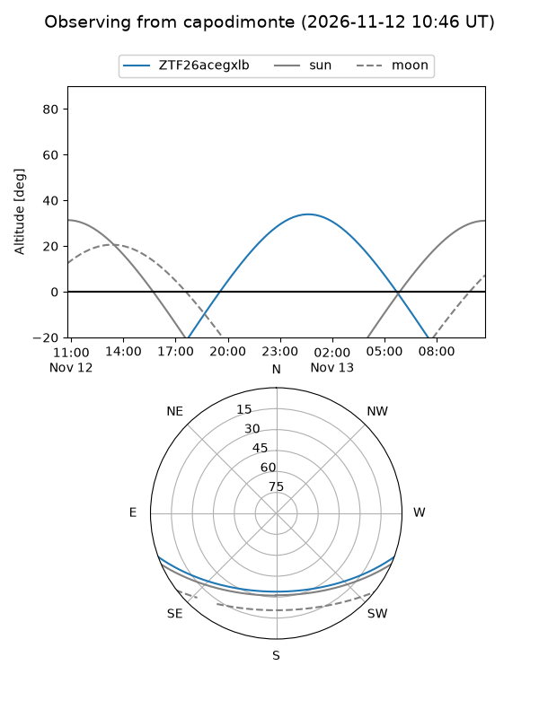
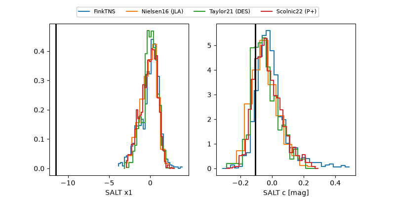

ZTF26acegxlb
Target ZTF26acegxlb at 2026-11-12 09:20
Aliases and brokers:
FINK-ZTF: ztf.fink-portal.org/ZTF26acegxlb
Lasair-ZTF: lasair-ztf.lsst.ac.uk/objects/ZTF26acegxlb
ALeRCE-ZTF: alerce.online/object/ZTF26acegxlb
Direct TNS query: direct search
alt names
ZTF26acegxlb (ztf,fink_ztf)
Coordinates:
equatorial (ra, dec) = 75.4525,-15.25904
equatorial (HMS+DMS) = 05:01:48.59,-15:15:32.56
galactic (l, b) = (215.0541,-31.01308)
Flags:
peak dt: +7.9
Photometry:
last ztfg=20.04, ztfr=20.12
3 ztfg, 3 ztfr detections
Lightcurve

Visibility



Additional plots
